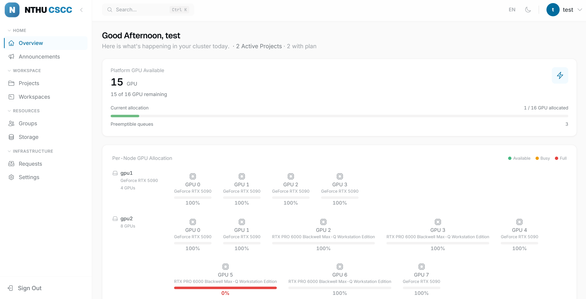

快速開始¶
從連線、登入到啟動第一個 GPU 工作區的逐步指南。
適用對象： 所有由管理員建立帳號的使用者。
前置需求¶
| 需求 | 說明 |
|---|---|
| 瀏覽器 | Chrome、Firefox、Edge 或 Safari（最新版本） |
| 帳號 | 由平台管理員提供的使用者名稱和密碼 |
| VPN 用戶端 | 相容 OpenVPN 的用戶端（參見步驟 1） |
需要 VPN
平台運行於私有網路。請先透過 OpenVPN 連線，再使用 cscc.nthu.edu.tw 底下的 DNS 名稱；不要直接瀏覽底層基礎設施網址。
步驟 1 — 安裝 VPN 用戶端¶
| 作業系統 | 建議用戶端 | 安裝方式 |
|---|---|---|
| Windows | OpenVPN Connect | 從官方網站下載安裝程式 |
| macOS | Tunnelblick 或 OpenVPN Connect | brew install --cask tunnelblick |
| Linux | OpenVPN CLI | sudo apt install openvpn 或 sudo dnf install openvpn |
步驟 2 — 連線 VPN¶
- 取得
Platform-VPN.ovpn設定檔——位於scripts/vpn/Platform-VPN.ovpn，或向管理員索取。 - 將其匯入 VPN 用戶端：
- Windows / macOS 圖形介面： 將
.ovpn檔案拖曳到用戶端視窗，或使用「匯入設定檔」功能。 - Linux CLI：
sudo openvpn --config scripts/vpn/Platform-VPN.ovpn
- Windows / macOS 圖形介面： 將
- 出現提示時，輸入您的 LDAP 使用者名稱 和 密碼（與登入平台的帳密相同）。
- 等待連線建立——用戶端顯示綠色指示燈或
Initialization Sequence Completed。
驗證連線
開啟終端機並執行：
nslookup dashboard.cscc.nthu.edu.tw
Windows 路由檢查
如果 OpenVPN 顯示已連線但連不到 192.168.109.1，請開啟 PowerShell
執行 route print | findstr 192.168.109。輸出應該要有一條經過
OpenVPN 介面的 192.168.109.0 路由；如果沒有，請重新匯入最新版
Platform-VPN.ovpn。
VPN 設定檔會接受 cscc.nthu.edu.tw 所需的平台 DNS，但不啟用
block-outside-dns。可用
Resolve-DnsName dashboard.cscc.nthu.edu.tw 確認平台 DNS，或用
http://192.168.109.1:30080 做低階連線檢查。
步驟 3 — 登入平台¶
- 開啟瀏覽器並前往：
https://dashboard.cscc.nthu.edu.tw - 您將看到包含三個欄位的登入頁面：
| 欄位 | 說明 |
|---|---|
| 使用者名稱 | 您的 LDAP 帳號 |
| 密碼 | 您的 LDAP 密碼 |
| 驗證碼 | 輸入圖片中顯示的 4 位字元（不區分大小寫） |
- 填寫所有欄位後點擊 登入。
圖 1：包含使用者名稱、密碼和驗證碼欄位的登入頁面。
sequenceDiagram
participant 使用者
participant 瀏覽器
participant 閘道
participant 後端
participant LDAP
使用者->>瀏覽器: 輸入帳密 + 驗證碼
瀏覽器->>閘道: POST /api/v1/login
閘道->>後端: 轉發請求
後端->>LDAP: 以使用者 DN + 密碼繫結
LDAP-->>後端: 繫結成功
後端-->>瀏覽器: JWT 權杖 + 使用者資料
瀏覽器-->>使用者: 跳轉至首頁儀表板驗證碼提示
- 驗證碼 不區分大小寫 ——
Ab3K和ab3k都有效。 - 點擊驗證碼圖片可 重新整理 驗證碼。
步驟 4 — 瀏覽首頁儀表板¶
登入後，您會進入 首頁儀表板（路徑：/）。
| 元件 | 顯示內容 |
|---|---|
| GPU 可用性 | 叢集中可用與已分配的 DRA GPU 單位 |
| 專案摘要 | 您的活躍專案及狀態 |
| 資源使用量 | CPU / 記憶體 / GPU 趨勢（可切換 7 天或 30 天） |
| 活動紀錄 | 您和團隊的近期操作 |
| GPU 任務 | 使用 GPU 的運行中工作區，含 SM 比例和記憶體資訊 |

圖 2：首頁儀表板，顯示 GPU 可用性卡片和活動任務表格。步驟 5 — 檢查您的專案¶
- 點擊左側選單 專案（工作空間區塊）。
- 您的帳號建立時會自動產生一個 個人專案——尋找與您使用者名稱同名的專案。
- 點擊專案卡片查看 配額（GPU、CPU、記憶體上限）和 成員。
 圖 3：專案頁面，顯示含配額摘要的個人專案卡片。
圖 3：專案頁面，顯示含配額摘要的個人專案卡片。
看不到專案？
請聯繫管理員將您指派到專案或群組，或確認您的帳號已完成配置。
步驟 6 — 啟動您的第一個工作區¶
- 點擊左側選單 工作區。
- 點擊 + 新增工作區。
- 填寫啟動表單：
| 欄位 | 選擇說明 |
|---|---|
| 專案 | 選擇您的專案（個人或團隊） |
| IDE 類型 | JupyterLab 或 VS Code |
| 映像檔 | Base、PyTorch、TensorFlow 或自訂 |
| CPU | CPU 核心數（如：2） |
| 記憶體 | RAM 大小（GB）（如：8） |
| GPU | GPU 數量與選用 SM 比例（例如 1 張 GPU、100% SM） |
| 儲存 | 掛載您的個人或群組儲存磁區 |
- 點擊 建立。
- 等待狀態從 啟動中（黃色）變為 運行中（綠色）。
- 點擊 開啟——IDE 將在新分頁中開啟。
 圖 4：工作區建立表單，包含專案、IDE 類型和資源欄位。
圖 4：工作區建立表單，包含專案、IDE 類型和資源欄位。
工作區無法啟動？
- 確認您的專案有足夠的 配額 剩餘。
- 檢查排程 計畫時段 是否已開啟（請詢問管理員）。
- 若使用自訂映像檔，首次拉取可能需要較長時間。
步驟 7 — 管理您的儲存¶
- 點擊左側選單 儲存（資源區塊）。
- 在您的個人儲存上點擊 啟動 以啟動檔案瀏覽器。
- 點擊 瀏覽——將開啟 FileBrowser 介面，您可以上傳、下載、重新命名和整理檔案。
- 此處儲存的檔案在工作區重新啟動後仍會保留。
 圖 5：FileBrowser 介面，顯示個人儲存內容。
圖 5：FileBrowser 介面，顯示個人儲存內容。
步驟 8 — 加入群組（選用）¶
- 點擊左側選單 群組。
- 瀏覽可用的群組或請管理員將您加入。
- 群組成員共享 群組儲存磁區——適合存放資料集和共用模型。
- 群組管理者可設定每位使用者的權限（讀取 / 寫入 / 無）。
服務快速參考¶
一般使用者只需要使用平台儀表板。API 與其他服務主機名稱都會經由 Gateway 路由，保留給儀表板、CLI、整合流程或管理員使用。
| 服務 | 網址 | 用途 |
|---|---|---|
| 儀表板 | https://dashboard.cscc.nthu.edu.tw |
使用者的平台主介面 |
常見問題¶
VPN 已連線但儀表板 DNS 無法解析
確認 VPN 用戶端有套用設定檔中的 DNS 設定。部分用戶端需要啟用 DNS update scripts 或重新匯入設定檔。使用者入口是 https://dashboard.cscc.nthu.edu.tw。
驗證碼輸入正確但仍顯示錯誤
驗證碼不區分大小寫。若圖片不清楚，點擊圖片 取得新驗證碼。避免混淆 0/O 或 1/I——產生器已排除容易混淆的字元。
登入失敗，顯示「帳密錯誤」
確認您使用的是 LDAP 使用者名稱（非電子郵件）。若密碼最近在 LDAP 目錄中被變更，舊密碼會立即失效。
工作區停留在「啟動中」狀態
通常表示容器映像檔正在首次拉取（大型 GPU 映像檔可能需要數分鐘）。若超過 10 分鐘仍在啟動中，請聯繫管理員確認排程佇列是否已啟用，以及專案的計畫時段是否已開放。
工作階段過期——被導向登入頁
JWT 權杖會在設定的時間後過期。重新登入即可。您的工作區狀態會保留。